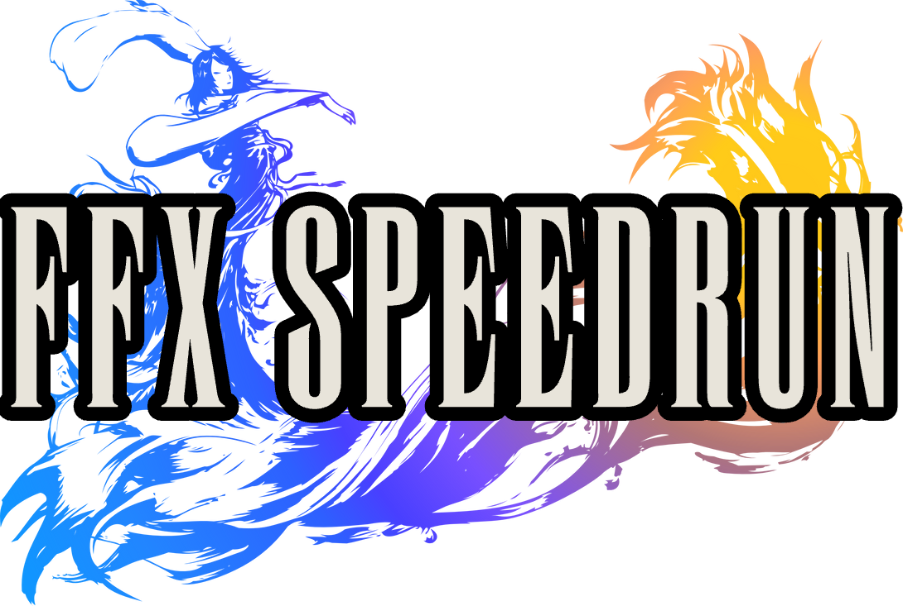

LIVE Streaming now All streams →
Categories All categories →
Loading…
World records Leaderboards →
Loading from speedrun.com…
Recent runs Leaderboards →
Loading from speedrun.com…

My personal FFX speedrunning notes, skip guides and tools. You're welcome to use them too.
Built with help from Claude, an AI assistant. More about this
Loading…
Loading from speedrun.com…
Loading from speedrun.com…